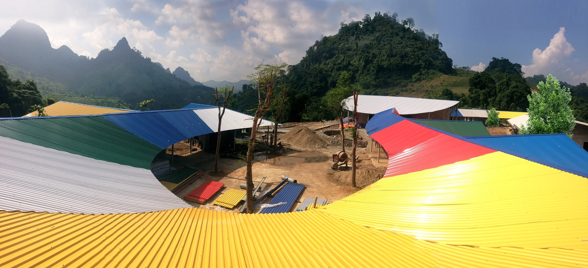
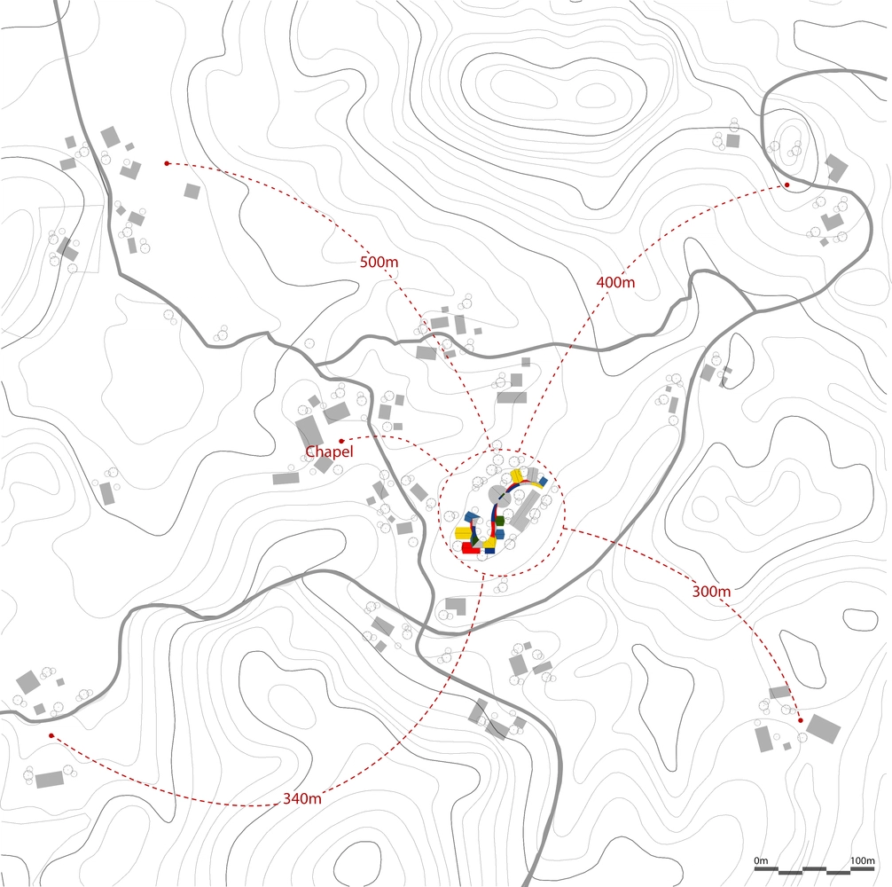

Câu chuyện về cảnh sống nghèo đói ở vùng núi phía Bắc nước mình chẳng còn mới lạ bởi ai cũng biết, nơi đó, nhiều em nhỏ ăn không đủ no, mặc chẳng đủ ấm, cơ sở vật chất nghèo nàn khiến các em phải học tập trong những lớp học ẩm thấp, cũ kỹ. Từ thực tế ấy, với mong muốn đưa con chữ đến gần hơn với trẻ em vùng cao, giúp các em nơi đây có tương lai tươi sáng hơn, dưới sự thực hiện của KTS Hoàng Thúc Hào và sự hỗ trợ của Quỹ Trò nghèo vùng cao do giáo sư Ngô Bảo Châu là chủ tịch danh dự đã góp phần xây dựng nên ngôi trường Lũng Luông khang trang, sạch sẽ, giúp các em học sinh có được một môi trường học tập tốt hơn.

Bản Lũng Luông nằm trong khu vực hiểm trở và khó khăn nhất của xã Thượng Nung, huyện Võ Nhai (Thái Nguyên). Con đường dẫn vào bản vô cùng gian khó. Mặt đường chỉ rộng 2 mét, nhiều đoạn dốc dựng đứng, lái xe chỉ sơ ý một chút là xe rơi xuống vực sâu.. Nơi đây chủ yếu là đồng bào dân tộc Mông, tỷ lệ hộ nghèo của xóm chiếm trên 80%, địa bàn rừng núi hiểm trở, đường sá đi lại khó khăn nên đời sống bà con gặp nhiều thiếu thốn. Chính vì lẽ đó, việc học hành của học sinh nơi đây cũng khó khăn không kém.

Trường Tiểu học Lũng Luông nằm cheo leo trên đỉnh núi. Trước khi có dự án xây mới, ngôi trường trông rất tuềnh toàng với những tấm bạt che ngăn gió lùa mùa đông rách nát, lớp học nền đất với những tấm ván ghép. Mái thì lợp bằng tấm xi măng nứt nẻ, chái nhà quây bằng phên nứa chẳng che được mưa tạt, gió lùa. Cảm giác về sự hoang sơ và nghèo nàn thật khó diễn tả.
Giờ đây, sau 2 năm xây dựng, Trường Tiểu học Lũng Luông hiện lên như một bông hoa rừng khoe sắc. Với mầu sắc sinh động cùng ngôn ngữ thiết kế hiện đại, công trình có hiệu ứng thị giác mạnh, mỗi góc nhìn đem lại một cảm nhận khác nhau.
Mục tiêu của dự án là tạo ra một ngôi trường tiện nghi, có thể chống lại sự khắc nghiệt của thiên nhiên. Thiết kế của trường đảm bảo các tiêu chuẩn về trường học như chiếu sáng, thông gió, cách âm. Với đầy đủ phòng học, phòng chức năng, phòng đa năng, thư viện, bếp nấu, nhà nội trú, khu vệ sinh kết hợp những đường nét thiết kế đơn giản mà vẫn khá điệu đà, nội thất sử dụng nhiều vật liệu truyền thống như tre, gỗ, gạch mộc…, công trình tạo nên một không gian hài hòa với cảnh quan núi rừng. Đứng ở bất kỳ góc nào trong trường, học sinh cũng đều có thể nhìn thấy không gian rừng núi hoang sơ.
Để tiết kiệm kinh phí và giúp tăng khả năng cách nhiệt: mát về mùa hè, ấm về mùa đông, gạch xây dựng trường đã được làm từ đất tại chỗ, tận dụng lại từ công tác san lấp mặt bằng. Không gian được tổ chức linh hoạt thành các lớp trong – ngoài, rỗng – đặc, không gian tĩnh – không gian động, giữa các khối với nhau.
Giống như một bông hoa rực rỡ giữa núi rừng, Trường tiểu học Lũng Luông chính là món quà khai giảng ý nghĩa nhất dành cho trẻ em dân tộc vùng cao nơi đây, thắp sáng ước mơ và hoài bão, giúp các em vượt qua khó khăn.

- Thiết kế: 1+1>2 Architects
- Diện tích: 1413 m²
- Địa điểm: Thượng Nung, Võ Nhai, Thái Nguyên
- Năm: 2016
- Hình ảnh: Son Vu